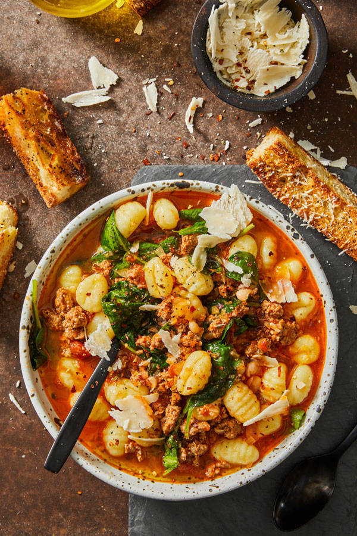

Gnocchi Soup

Description
This chicken and gnocchi soup is so comforting and delicious — it will warm you inside and out. It's one of the best soups that I have had in a long time. Enjoy!
Ingredients
- 1 tablespoon olive oil
- 1 small onion, diced
- 3 stalks celery, diced
- 3 cloves garlic, minced
- 2 carrots, shredded
- 1 pound cooked, cubed chicken breast
- 4 cups chicken broth
- 1 (16 ounce) package mini potato gnocchi
- 1 (6 ounce) bag baby spinach leaves
- 1 tablespoon cornstarch (Optional)
- 2 tablespoons cold water (Optional)
- 2 cups half-and-half cream
- salt and ground black pepper to taste
Steps
- Gather all ingredients.
- Heat oil in a large pot over medium heat. Cook carrots, celery, onion, and garlic in hot oil until onion is translucent, about 5 minutes. Stir in cubed chicken and chicken broth; bring to a simmer.
- Stir gnocchi into soup and cook until they begin to float, 3 to 4 minutes. Stir in spinach and cook until wilted, about 3 minutes.
- Whisk cornstarch into cold water in a measuring cup until smooth. Stir the cornstarch mixture and half-and-half into soup. Cook until soup thickens slightly, about 5 minutes. Season with salt and pepper.
Home